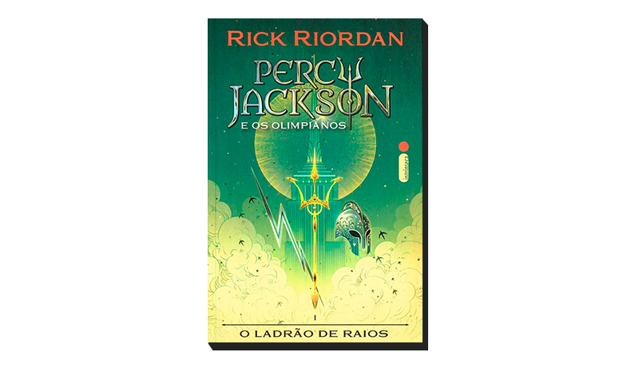

Quarta Asa
Violet Sorrengail, uma jovem de vinte anos, estava destinada a entrar na Divisão dos Escribas,
levando uma vida relativamente tranquila entre os livros e as aulas de História. No entanto,
a general comandante das forças de Navarre – também conhecida como sua mãe –, durona como as
garras de um dragão, ordena que Violet se junte às centenas de candidatos que buscam se tornar
a elite de seu país: cavaleiros de dragões.
⭐ ⭐ ⭐ ⭐ ⭐
Ver livro
 É assim que acaba
É assim que acaba
Em É assim que acaba , Colleen Hoover nos apresenta Lily, uma jovem que se mudou de uma cidadezinha do Maine para Boston,
se formou em marketing e abriu a própria floricultura. E é em um dos terraços de Boston que ela conhece Ryle,
um neurocirurgião confiante, teimoso e talvez até um pouco arrogante, com uma grande aversão a relacionamentos, mas que se sente muito atraído por ela.
⭐
⭐
⭐
⭐
⭐
Ver livro

Percy Jackson e os olimpianos: Ladrão de raios
O autor conjuga lendas da mitologia grega com aventuras no século XXI. Nelas, os deuses do Olimpo continuam vivos,
ainda se apaixonam por mortais e geram filhos metade deuses, metade humanos, como os heróis da Grécia antiga. Marcados pelo destino,
eles dificilmente passam da adolescência. Poucos conseguem descobrir sua identidade.
⭐
⭐
⭐
⭐
⭐
Ver livro